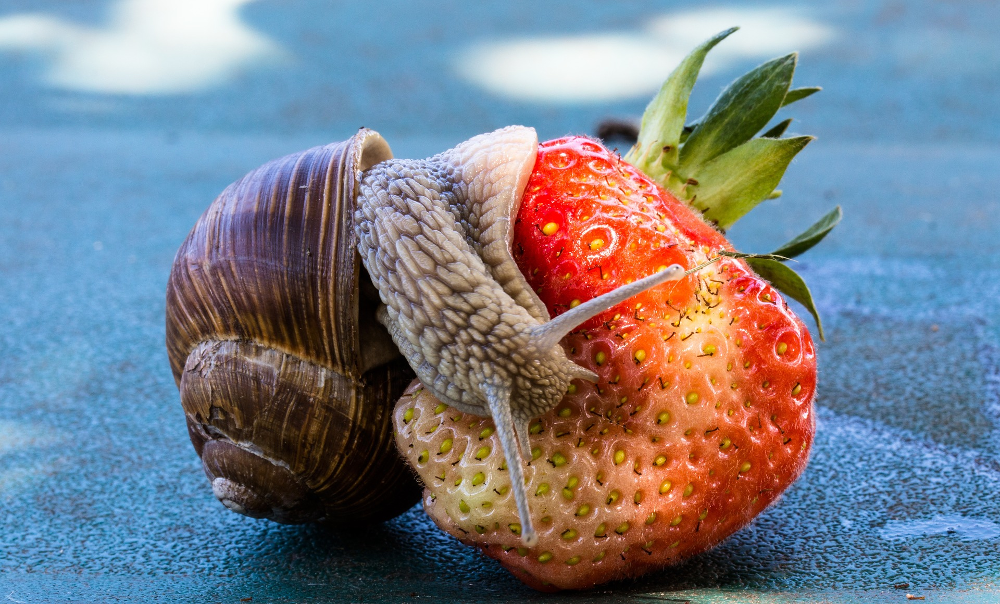
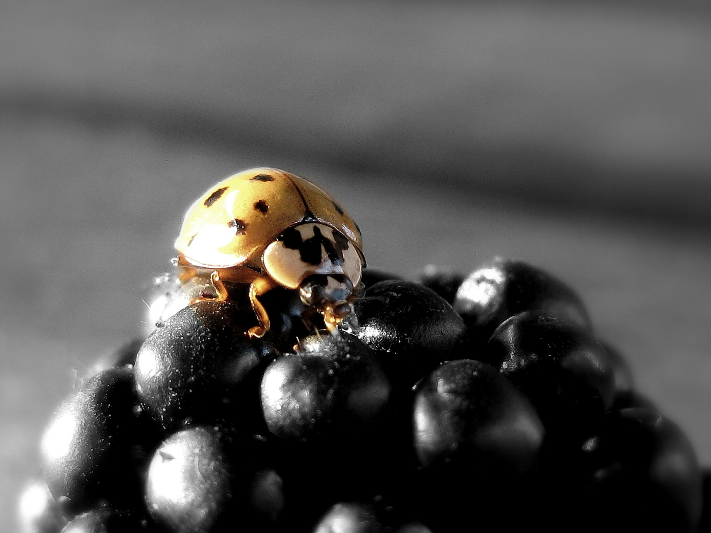
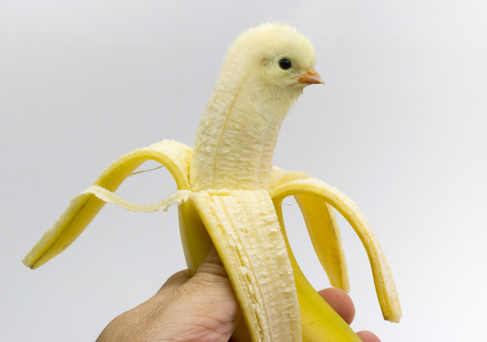

Some friends and their fruity favourites!

Lorraine loves pineapples. They are her favourite!

Kevin prefers strawberries, but is partial to pineapples.

Mildred will only eat berries. Where will she get her vitamin D?

Gregory doesn't just like bananas, he is one! Holy cow!
My life goal is to eat at least one of every fruit in the world. My other friends like nasty, sugary chocolate and sweets but they're just silly. Sweets are so unhealthy, unlike fruit. Bananas, pineapples, pears; you name it. I just love fruit.
- Roger the Rat, fruit connoisseur
Show your appreciation for Roger!
Keep updated with Rogers quest to find and consume every fruit!